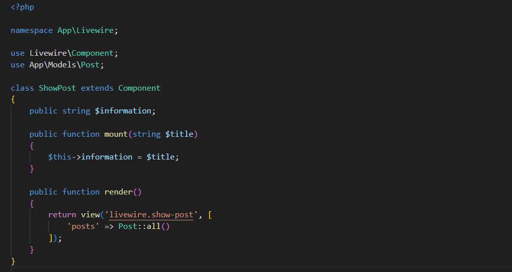
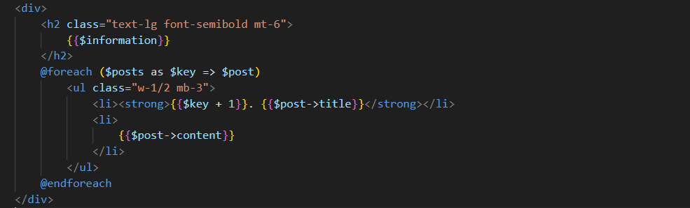
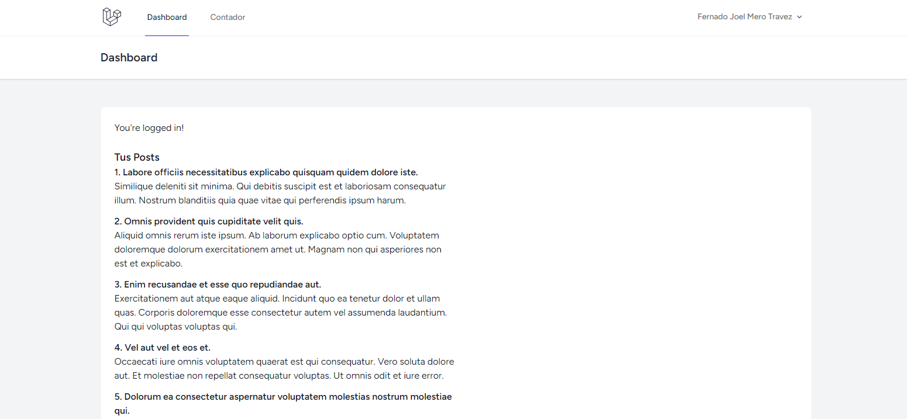

Para la gran mayoría de casos, vamos a nesecitar que solo cierta secciones de una pagina sean reactivas. En esta situacion es común llamar a los componentes de Livewire con esta directiva Blade.
Ella recibe el nombre de un componente en minusculas y separado por guiones para renderizarlo. Por ejemplo, un componente cuya clase es ShowPosts se redenriza de esta forma:
@livewire('show-posts')
Esta directiva también acepta como segundo parametro un arreglo con información para el componente.
@livewire('show-posts', ['information' => $value])
Si le pasamos información a la directiva, también debemos recibirla en la Clase del componente. Simplemente le agregamos un atributo a la clase ShowPosts:
public $information;
Dentro de esta propiedad va a quedar almacenada la informacion que le pasamos en la variable $value.
Cualquier atributo de la Clase de un componente puede ser accedido desde su vista. Por ejemplo, la propiedad $information de la clase ShowPosts puede ser accedida directamente en la vista show-posts del componente con las llaves de Blade:
{{$information}}
Podemos usar el metodo mount() de la Clase para recibir una variable por la directiva @livewire y asignarle su valor a un atributo.
De esta forma le pasamos la variable $title a la directiva @livewire:
@livewire('show-post', ['title' => 'Titulo Importante'])
Y renderizamos ese valor en la vista del componente usando el atributo $information donde fue montado:
En el otro caso cuando deseamos que toda la pagina sea reactiva, no es conveniente hacer uso de los componentes con @livewire. Porque nos obligaría a crear una vista y un controlador innecesarios cuya única finalidad es renderizar el componente de Livewire.
En lugar de aquello, podemos usar el componente como si fuera un controlador en las rutas:
use App\Livewire\Counter;
Route::get('/counter', Counter::class);
El componente va a buscar por defecto la plantilla resources/views/components/layouts/app.blade.php para renderizarse automaticamente en la variable $slot.
Si deseamos cambiar la plantilla por defecto en la cual se renderiza el componente cuando lo usamos de desta forma, devemos encadenar el metodo layout() y pasarle la plantilla que deseamos usar:
Cuando usamos un componente como controlador en las rutas, puede darse el caso donde la ruta reciba un parametro.
Route::middleware(['auth'])->get('/counter/{step}', Counter::class);
Para recibir esta información en el componente simplemente agregamos una la propiedad correspondiente a la Clase:
public $step;
O alternativamente usamos el metodo mount():
Para recuperar datos de la Base de Datos en un componente, hacemos exactamente los mismo que haríamos como si se tratase de un controlador:
Los mostramos en la vista del componente:
Y finalmente el resultado es identico a usar un controlador:
